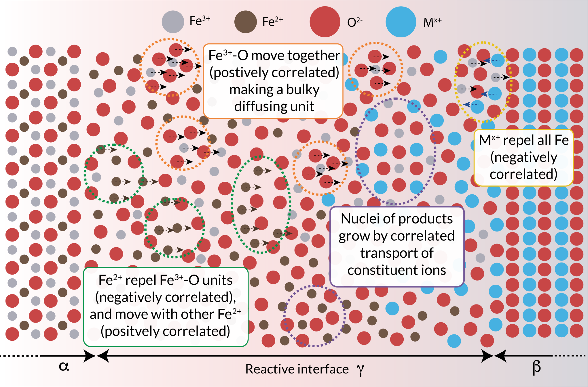
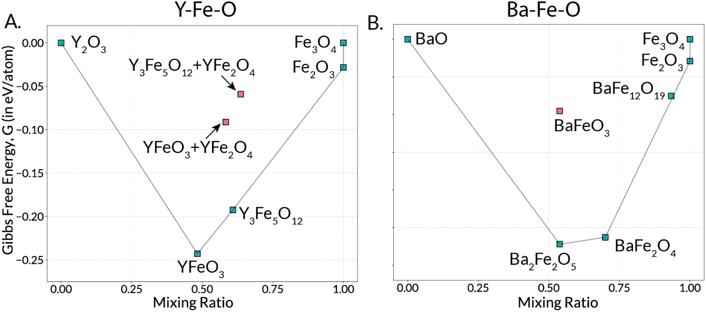
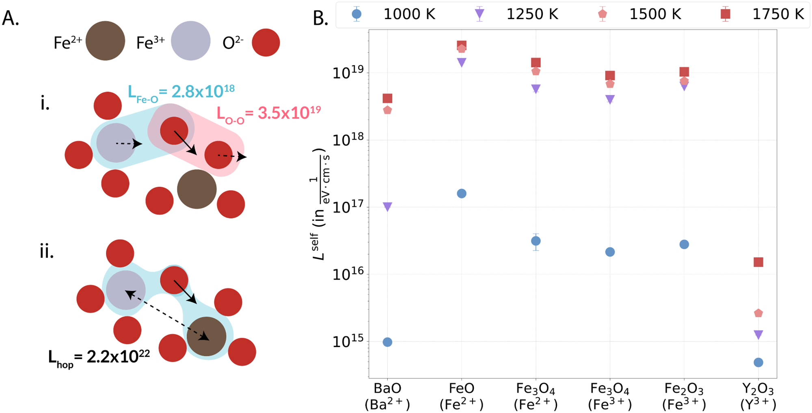
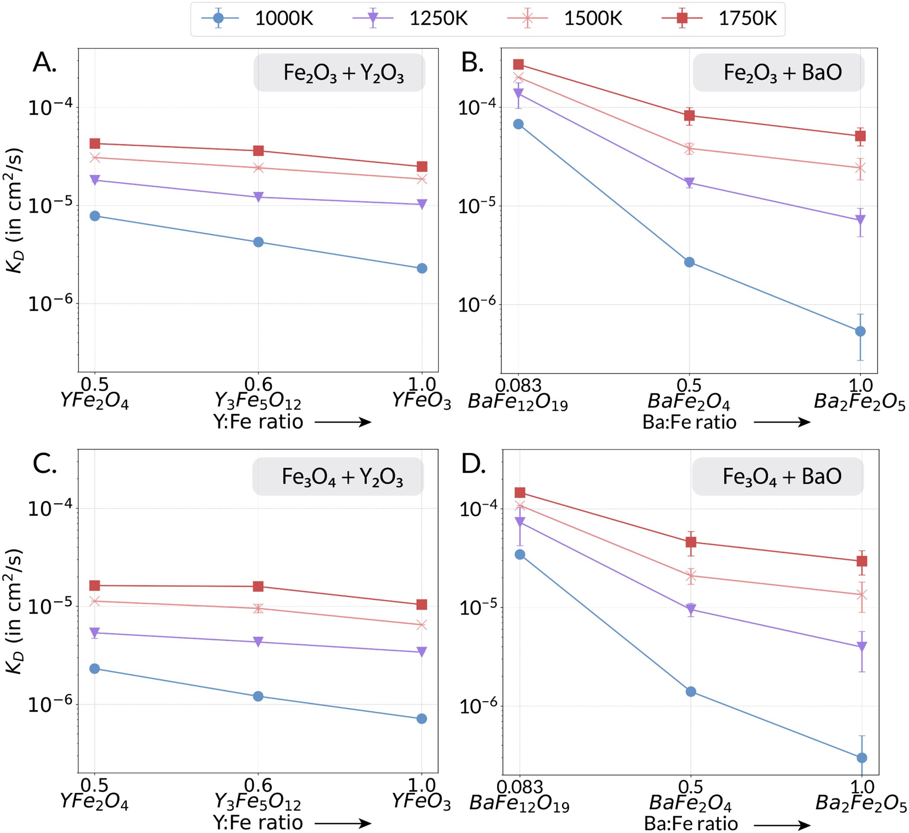
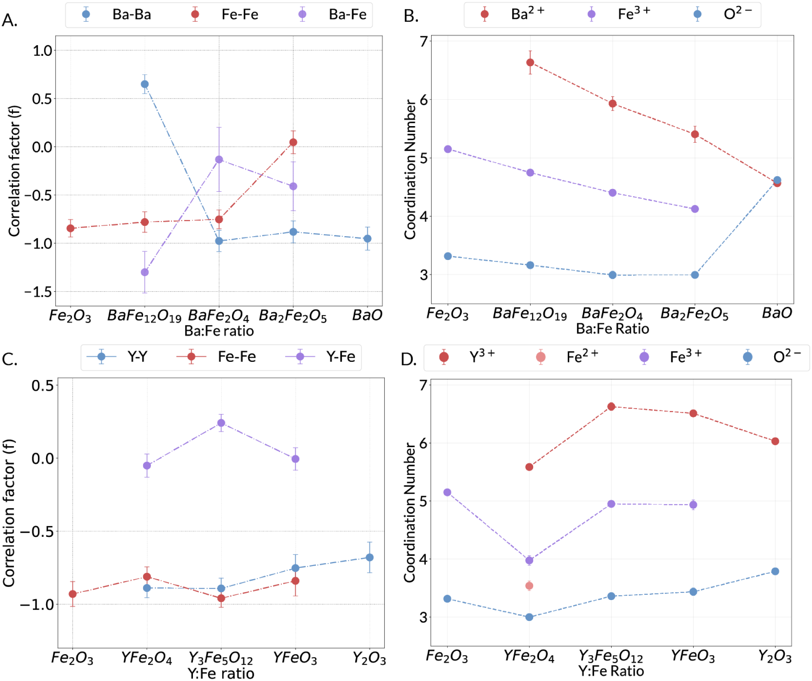
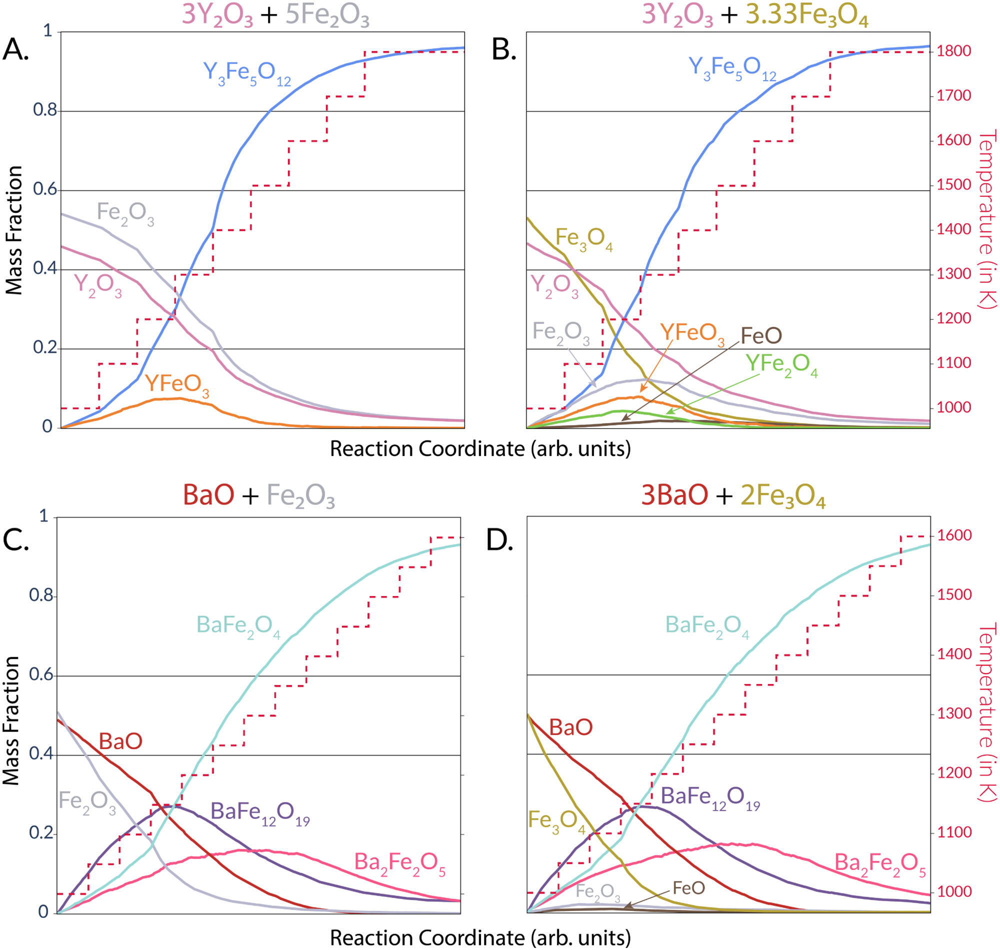
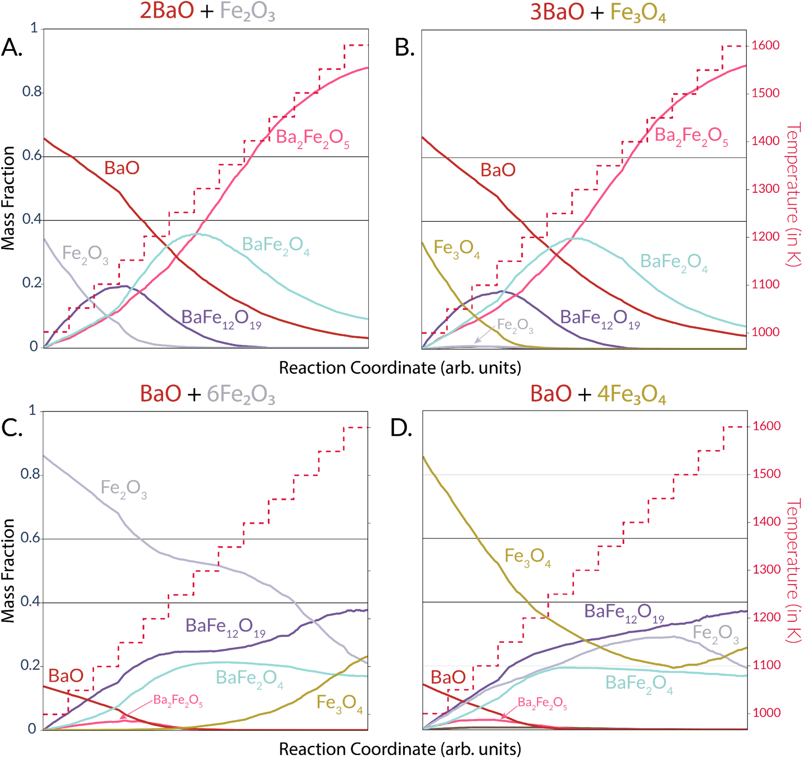

将氧化还原与离子输运结合，预测混合价态氧化物的固相合成
论文原文 ↗Diffusion-Limited Solid-State Synthesis Selectivity in the Presence of Oxidation/Reduction Processes
Vir Karan、Kristin A. Persson｜Chemistry of Materials，2026｜DOI｜
固相合成会生成哪种晶相，既取决于形成它在热力学上是否有利，也取决于原料能否及时输运到生长界面。前驱体和升温程序因此会改变反应路径。作者此前将第一性原理热力学与相关离子输运结合，用于 Ba–Ti–O；这篇工作进一步处理一个重要问题：当金属可以在反应中改变价态，氧化还原怎样影响离子运动，并进一步改变成相顺序？
作者将框架扩展到 Ba–Fe–O 和 Y–Fe–O，以 CHGNet 支持混合价态环境的建模，预测粉末反应中的相形成和相分布演化，并与原位 X 射线衍射报告比较。
方法怎样做：从接触界面的原子运动，到粉末中的成相路径
框架的核心是前驱体接触处的“类液态”非晶界面。这里的原子缺少晶体中的长程有序，更容易局部重排；原料离子穿过这层界面，向产物晶核供应物质。不同组成的界面有不同输运能力，因此会影响哪些晶核长得更快。
以 BaO 与 Fe₂O₃ 为例，整体配比可以对应 BaFe₂O₄，局部反应界面却还可能形成 BaFe₁₂O₁₉、Ba₂Fe₂O₅ 等竞争相。模型为每种候选结合两类信息：形成它的自由能，以及输送所需离子的速率。

图1｜前驱体通过无序界面向晶核供应物质，离子之间的协同和反向关联共同影响输运。热力学计算从 r²SCAN 第一性原理能量出发，加入固体热容和氧气的温度依赖自由能，得到相应温度、气氛和配比下的相稳定性。反应凸包用自由能最低的相组合描述稳定状态，为不同局部反应提供驱动力。

图2｜Ba–Fe–O 与 Y–Fe–O 的有限温度反应凸包，把前驱体比例与可能生成的稳定相联系起来。计算输运则需要原子轨迹。原子间势根据元素、位置和局部环境给出能量与力，用于推进分子动力学。作者用第一性原理数据微调 CHGNet，使它描述高温无序铁酸盐环境，再将其能量面蒸馏给计算更快的 GrACE 势。随后在不同候选组成和温度下模拟类液态结构，统计离子的运动。
混合价态的处理是本文的方法关键。Fe²⁺与 Fe³⁺可以通过电子转移互换，电子重排又比离子移动快得多。作者利用 CHGNet 预测的局域磁矩，并结合整体电中性，为铁位点赋予相应价态；在原子轨迹中跟踪这种变化，将 Fe²⁺和 Fe³⁺分别纳入输运统计。

图3｜快速电子转移与较慢离子移动的关系，以及不同价态铁离子的输运比较。从轨迹提取的是 Onsager 输运矩阵：它既统计各类离子自身的移动，也统计不同离子位移之间的关联。矩阵与前驱体的化学势差、候选计量和体积结合，转为对应产物的有效扩散速率常数 K_D。Fe²⁺和 Fe³⁺的贡献最终按铁的总通量合并，由此将价态变化接回晶核生长需要的元素供应。
最后，ReactCA 将粉末表示成具有相标签的小单元。程序从混合前驱体出发，按局部自由能、K_D 和温度选择反应并推进物质转化，累计得到各相分布。这样，第一性原理能量、原子运动和粉末反应便进入同一条计算路线。
主要结果：相关输运解释成相顺序及前驱体效应
不同组成的输运差异，使竞争相具有不同生长优势
Ba–Fe–O 中，低 Ba 含量的 BaFe₁₂O₁₉ 对应较大的 K_D。低温时，它与其他组成的输运差异可达约两个数量级，因此能在早期获得较强生长优势。Y–Fe–O 中，不同候选组成的输运变化较小，热力学的相对作用更突出。

图4｜按候选金属比排列的 K_D，并比较温度和铁源。Ba 体系更明显的组成依赖，有助于解释其竞争相选择。作者进一步从集体运动和局部配位解释差异：Ba 含量变化会改变 Ba–Ba、Fe–Fe 和 Ba–Fe 的运动关联，同时重排 Fe–O 网络；Y 体系的变化较弱。这使产物组成与输运速率之间的联系具有了具体的原子结构解释。

图5｜运动相关因子和配位数随组成的变化，将宏观有效输运连接到局部原子环境。模型再现目标相形成过程中出现的中间阶段
在 Y:Fe=3:5 的反应中，模型先形成少量 YFeO₃，再逐渐转向 Y₃Fe₅O₁₂；更换 Fe₂O₃ 与 Fe₃O₄ 后，中间氧化物和含低价铁组分的演化有所变化。环境氧与价态调整共同参与了这一过程。
在 Ba:Fe=1:2、目标为 BaFe₂O₄ 时，两种铁源的模拟都先出现富铁的 BaFe₁₂O₁₉，随后再以目标相为主。前面计算得到的输运优势，由此转化为早期成相顺序的解释：局部更容易获得原料的竞争相可以先长出来，再随整体反应推进转化。

图6｜两种铁源下，Y₃Fe₅O₁₂ 与 BaFe₂O₄ 目标配比的相分数随升温和反应推进的变化。总配比与铁价态共同组织相分布
改变 Ba:Fe 总配比后，相同的竞争相会参与不同的反应路径。Ba:Fe=1:1 时，BaFe₁₂O₁₉、BaFe₂O₄ 先后参与转化，最终以 Ba₂Fe₂O₅ 为主；Ba:Fe=1:12 时，BaFe₁₂O₁₉ 从早期便具有明显存在比例，并与其他铁氧化物发生持续竞争。更换铁源也会改变中间氧化物的分布。

图7｜不同总配比及铁源的比较，展示温度、组成和氧化还原如何共同影响反应中的相分布。作者将这些路径与原位衍射和合成报告比较，展示框架对首生相、竞争相及相分布演化的预测能力。将热力学和输运同时纳入，使原本只看平衡稳定性的判断延伸到实际粉末反应过程。
研究贡献
本文把扩散限制的相选择性推广到混合价态氧化物：价态不再只是初始配方的标签，而成为可以随局部环境变化、并影响相关输运的变量。第一性原理热力学、机器学习势和反应模拟由此联通，为比较前驱体、温度程序和目标组成提供统一的计算方法，推进同时考虑热力学与动力学的合成路线设计。
附：完整原始摘要中文翻译
固相合成结果来自热力学与动力学的相互作用，二者的相对重要性受温度程序、前驱体选择等外部控制参数支配。近期提出的一个框架，将第一性原理热力学与机器学习支持的相关离子输运模拟相结合，通过将相选择性与“类液态”非晶界面层中的离子迁移能力联系起来，成功描述了 Ba–Ti–O 体系中的这种相互作用。值得注意的是，在合成过程中价态能够变化的体系中，离子动力学与氧化态强烈耦合。
在此，我们将该框架扩展到这类混合价态体系，并以原位 X 射线衍射实验为基准，展示其对 Ba–Fe–O 和 Y–Fe–O 体系中三元金属铁酸盐合成的预测能力。与 Ba–Ti–O 体系类似，我们假设控制多晶型生长的离子物种限速输运，发生在“类液态”非晶界面层中。为捕捉这种行为，我们采用电荷信息辅助的机器学习势 CHGNet，使依赖氧化还原状态的相关输运能够得到建模。
我们发现，该框架准确预测了粉末合成反应中的成相顺序和相分布随时间的演化，与实验报告一致。这些结果表明，混合价态氧化物中的扩散限制相选择性可以得到统一处理，进一步为同时考虑热力学和动力学因素、通过计算合理设计合成路线铺平道路。